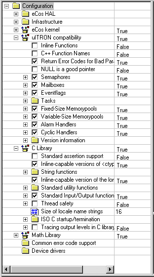
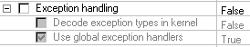

The Configuration Pane presents a hierarchical view of the configuration.
In most respects it behaves as other tree-based views (such as the desktop explorer); for example nodes may be expanded or collapsed by double-clicking the node label or by clicking on the left-hand button:
Additionally, the configuration pane includes controls to change the configuration: each configurable item is represented by one of the following controls:
Boolean control:
A Boolean item may be set or unset (like a C bool):
Radio control
A radio item is similar to Boolean item. However, you
can select only one radio item within each branch of the
tree.
Integer control:
An integer item may be set to an integer value (like a C int):
String control:
An string item may be set to a string value (like a C string literal)
Enumeration control:
An enumeration item may be set to one of a defined set of
values (like a C enum value)

Group controls:
Group items are used solely to group child items:
group items do not correspond to any preprocessor
macros:

Configurable items are those items which correspond to preprocessor macros in output header files, for example all except group items. There are two interesting attributes of a configurable item: whether the item is defined at all and, if so, what its value is.
An item is defined (will result in a #define output) if it is enabled. Enabled items are displayed normally; disabled items, and descendants of disabled items, are grayed (see the section called Child Items).
The value of an enabled configurable item is straightforward:
Table 2-1. Types of configurable items
| Type | Header File Output |
|---|---|
| Boolean | #define MacroName or #undef MacroName |
| Radio | #define MacroName or #undef MacroName |
| Integer | #define MacroName Value |
| String | #define MacroName Value |
| Enumeration | #define MacroName Value |
Each boolean, radio and group item can be the parent of other items. The state of descendants of Boolean and Radio items depends on their ancestor — the ancestor item is unset then descendants will be disabled. Disabled descendants are displayed using gray text:

Although the values of grayed items are still visible, they may not be changed unless you first enable the Boolean or Radio ancestor item.
Configurable items' values may be changed in two ways — by operating on the tree control and on the cells to the right hand side.
Boolean and radio items
You may change values by clicking the associated checkbox or radio button. (the keyboard shortcut is the space bar).
Integer and enumeration items
Values may be incremented by clicking the associated icon (the keyboard shortcuts + and - also serve to increment and decrement the values); wrap-around occurs when a boundary value is reached: an arbitrary value may only be set using in-cell editing (see below)
String items
You may only change string values using in-cell editing (see the section called In-Cell Editing).
On the right hand side of the configuration pane is a vertical gray dividing line which divides the item values from the rest of the tree. This line acts as thin splitter bar and may be dragged left or right as desired. To the right of the divider is a cell for each configurable item.

Clicking on a cell allows for in-cell editing: a configurable item's value may be updated in place. Clicking in the configuration pane outside of an in-cell control terminates the in-cell editing.
Boolean, radio and enumeration items are edited in-cell by means of a combo box:

Integer items are edited in-cell by means of an edit box:
String items are of two flavors: multi-line and single-line strings (see below). Multi-line string cell editing is by means of a pop-up dialog that is invoked by clicking the "edit" button
Single-line strings are edited using an in-cell edit box, as for integer items:

Integer items' values may be specified in hexadecimal or decimal format. Hexadecimal format values may be specified using a leading "0x". Note: the manner in which integer items are specified using in-cell editing does not affect the header file output format, which is always decimal. All items are assumed to be 32 bits in width, although maximum and minimum values may be used to constrain the range (see below).